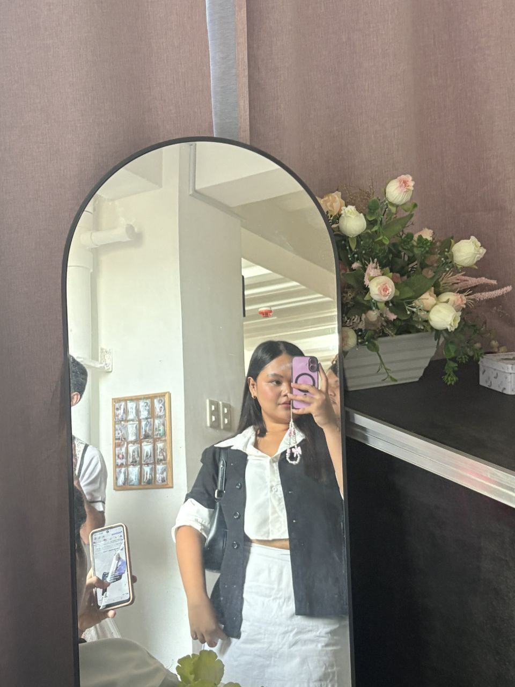

Name:
• Marianne Oro
Strand/Section:
• STEM-12 CANDOR
I am
• 17 years old
• A Senior High School Student
• live in Bulacao Cebu City
• Friendly, easygoing, and naturally gets along with everyone I meet.
• Caving
• Working out
• Diving
Strength
• I am friendly, approachable, and naturally able to get along with people from all walks of life. I excel in teamwork, enjoying collaboration and helping groups achieve their goals. My empathy and understanding allow me to connect deeply with others and navigate challenges smoothly.
Values
• I highly value kindness, respect, and honesty, always treating others with consideration. I strive to create inclusive and supportive environments where everyone feels welcome. Trust and harmony guide my interactions, ensuring positive and meaningful relationships.
Personal Goal
• To build strong relationships and create a positive, supportive environment.
Academic Goal
• To gain strong knowledge and skills in geodetic engineering to excel in my studies and future career.
Career Goal
• To excel as a geodetic engineer and contribute to accurate surveying and mapping projects.
• I love learning new things and am very adventurous, always open to trying new experiences and challenges. I enjoy stepping out of my comfort zone, exploring different opportunities, and discovering what I'm capable of. For me, every new experience is a chance to grow, have fun, and create memorable moments.